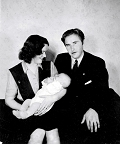
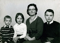

Ruth Elvira Granström
Blev 73 år.
| Född: | 1923-11-29 Adamsgård 1, Kalvträsk fs, Burträsk sn. [1] |
|---|
| Omflyttad till: | 1960 Burträsk, Burträsk fs, Burträsk kn. |
|---|
| Levde: | 1971 Burträsk, Burträsk fs, Burträsk kn. [2] |
|---|
| Utflyttad till: | 1971 Skellefteå, Skellefteå lfs, Skellefteå kn. |
|---|
| Död: | 1997-02-21 Skellefteå, S:t Olovs fs, Skellefteå kn. |
|---|
| Vigsel: | 1946-05-11 Kristineberg, Björksele fs, Lycksele sn. [3] | I ett handskrivet telegram från arbetskamrater vid Kristinebergs gruva kan läsas:
Rubrik: I sista stund anländer Telegram till Brudparet Fredman.
Från verket nu Vi driftstopp ställer,
en tyst minut för det äkta par.
På Folkan nu applåden smäller för Ingvar,
och den tös han tar.
Du jobbat har med prov, och analyser,
prov från skål och borr, och övrerläpp.
Kemisk procedur och formler, så man fryser,
Du klarat det, tack vare snus på underläpp.
Ett annat jobb, Du nu hoppar på, Ingvar lille,
att sköta kvinns, det så kallat, svaga kön.
Trots varningen av oss, Du ändå ville,
men vi spår att du nu, skall göra andra rön.
För märk att allt ifrån Adams dagar,
har Eva lurat, med kunskapens frukt,
men med kaveln i sin hand, hon mannen jagar,
och i dagligt tal, hon håller han i tukt.
Så kan Vi ej nu längre låta verket stå,
Vi kör igång! Ni hör hur kvarnar surra,
så önskar vi er lycka till, med dessa rader få,
och att Ni hör hur Vi i Verket Hurra!!!!
Verkarna u.p.a. vid Kristinebergs gruva
|
|---|
| Skilsmässa: | 1949-11-25 Kristineberg, Björksele fs, Lycksele sn. | |
|---|
| Levde Sambo: | 1954 Åsträsk, Kalvträsk fs, Burträsk sn. |
|---|
Noteringar
På lasarettet i Skellefteå avled på fredagen Ruth Fredman, född Granström, 73 år, efter en tids sjukdom. Hon växte upp på hemmanet i Adamsgård inom Kalvträsk församling och förvärvsarbetade som kocka i Duved, Jämtland och Kristinebergs några år innan hon bildade familj 1946 i gruvsamhället Kristineberg. Ruth ställdes ganska snart ensam efter skillsmässan som ansvarig för barnens vårdnad. De som kände henne vet vilken tapper och uthållig insats hon gjort - trots armod och besvärligheter. Ruth förmedlade glädjen i musiken och sången. Det har blivit hennes arvedel till efterföljande släktled. Hennes gladaste minnen från barndomen var när hon i kretsen av morbröder stående på bordet deklamerade och sjöng. Ruth Fredman har under sin levnad bytt bostadsort mer än de flesta, men har ändå lyckats rota sig och finna sig till rätta. I Skellefteå har hon bott och verkat en tredjedel av sin levnad. Ett av hennes stora intressen har varit att på ålderns höst med erkänt gott resultat odla bär och grönsaker på egna kolonilotter. Tala om att ha gröna fingrar! Hon fann också stor glädje i handarbete av allehanda slag. Hon har sedan 1987 deltagit i Hjärt- och lungsjukas föreningsverksamhet. Stor är saknaden och sorgen av en sällsynt uthållig och viljestark människa. Närmast sörjande är de tre barnen och deras familjer samt syskon./Barnen (Infört i Norra Västerbotten)
Personhistoria
| Årtal | Ålder | Händelse |
|---|
| 1923 |
|
Födelse 1923-11-29 Adamsgård 1, Kalvträsk fs, Burträsk sn [1] |
| 1925 |
2 år |
Systern Ingeborg (Inga) Karolina Granström föds 1925-12-28 Adamsgård 1, Kalvträsk fs, Burträsk sn [4] |
| 1930 |
6 år |
Systern Ebba Kristina Granström föds 1930-08-15 Adamsgård 1, Kalvträsk fs, Burträsk sn [5] |
| 1930 |
6 år |
Systern N Granström föds 1930-08-18 Norsjö sjukstuga, Norsjö sn [6] |
| 1930 |
6 år |
Systern N Granström dör 1930-08-18 Norsjö sjukstuga, Norsjö sn [5] |
| 1942 |
18 år |
Systern Gunbritt Ingegerd Anita Granström föds 1942-01-24 Adamsgård 1, Kalvträsk fs, Burträsk sn [2] |
| 1946 |
|
Sonen Jan Fredman föds 1946 Kristineberg, Björksele fs, Lycksele sn [3] |
| 1946 |
22 år |
Vigsel Ingvar Valentin Fredman 1946-05-11 Kristineberg, Björksele fs, Lycksele sn [3] |
| 1947 |
24 år |
Dottern Rut Gullan Viveka Fredman föds 1947-11-29 Kristineberg, Björksele fs, Lycksele sn |
| 1949 |
25 år |
Skilsmässa Ingvar Valentin Fredman 1949-11-25 Kristineberg, Björksele fs, Lycksele sn |
| 1954 |
|
Levde Sambo Nils Oskar Pörn 1954 Åsträsk, Kalvträsk fs, Burträsk sn |
| 1954 |
31 år |
Sonen Nils Roger Granström Fredman föds 1954-12-23 Åsträsk, Kalvträsk fs, Burträsk sn |
| 1960 |
|
Omflyttad till 1960 Burträsk, Burträsk fs, Burträsk kn |
| 1963 |
39 år |
Fadern "Starkast i Burträsk socken" Karlander Granström dör 1963-04-09 Risliden 23:1, Norsjö kbfd, Norsjö kn [7] |
| 1965 |
41 år |
Modern Eva Kristina Forsberg dör 1965-03-18 Risliden 23:1, Norsjö fs, Norsjö kn [8] |
| 1971 |
|
Levde 1971 Burträsk, Burträsk fs, Burträsk kn [2] |
| 1971 |
|
Utflyttad till 1971 Skellefteå, Skellefteå lfs, Skellefteå kn |
| 1974 |
50 år |
Systern Ingeborg (Inga) Karolina Granström dör 1974-04-21 Laisvall, Arjeplogs kbfd, Arjeplogs kn [9] |
| 1997 |
73 år |
Död 1997-02-21 Skellefteå, S:t Olovs fs, Skellefteå kn |
Källor
| [1] | Födda AC Kalvträsk C: 43/1923 k.9/15 |
| |
| | |
| [2] | Mtl Västerbottens län 1971 |
| |
| | |
| [3] | SCB Födda AC Norsjö 101/1946 |
| |
| | |
| [4] | Födda AC Kalvträsk C: 40/1925 k.8/15 |
| |
| | |
| [5] | Födda AC Kalvträsk 24/1930 k.7/15 |
| |
| | |
| [6] | Födda AC Kalvträsk 25/1930 k.7/15 |
| |
| | |
| [7] | DB, FS / DOR 63 / UTD 61-67, NV - Dödsannonsregistrering 1963-04-17, 1897-07-17 |
| |
| | |
| [8] | DB, FS / DOR 65, NV - Dödsannonsregistrering 1965-03-20 |
| |
| | |
| [9] | RTB 74, MTL 71 |
| |
|
 |
| 1946-05-11. Brudparet Ruth Granström och Ingvar Fredman. |
| |
 |
| 1946-05-11. Mor Eva Granström, Ruth Granström och Ingvar Fredman, far Karlander Granström och brudnäbben systern Gun-Britt Granström. |
| |
|  |
| 1946. Ruth, Ingvar och sonen Jan Fredman. |
| |
 |
| (Aug 1948). Jan 2 år, Ruth och Viveka 9 månader. |
| |
|  |
| 1960. Roger, Viveka, Ruth och Jan Fredman, Riksbygget, Burträsk. |
| |
|
Vår mor fylller 50 år den 29 november 1973.
Norra V'ästerbotten 1973-11-28 Familjenotiser
|
|


{kind=link}
{kind=link}
{kind=link}